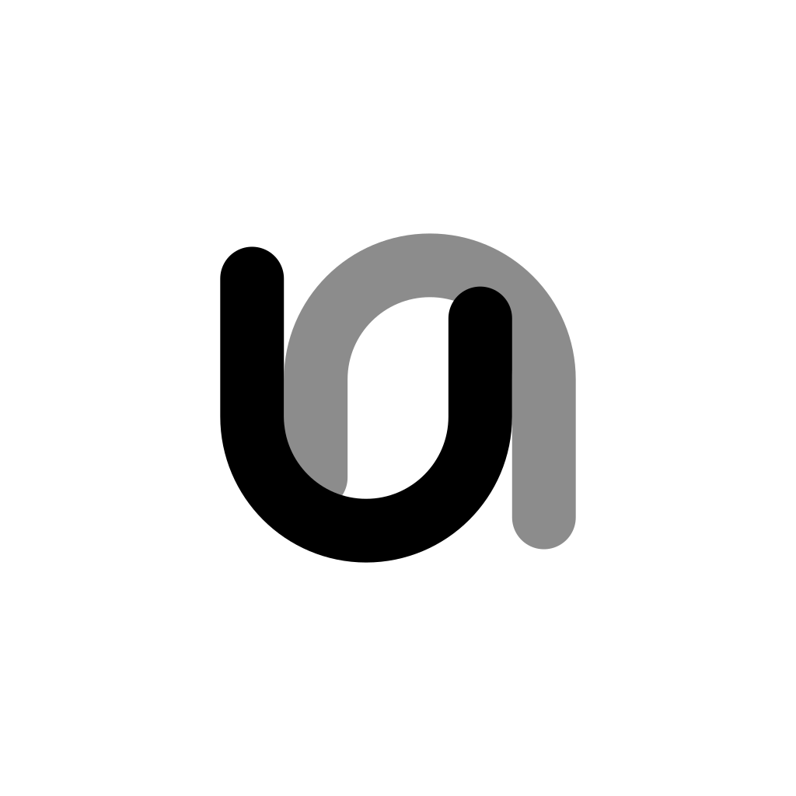
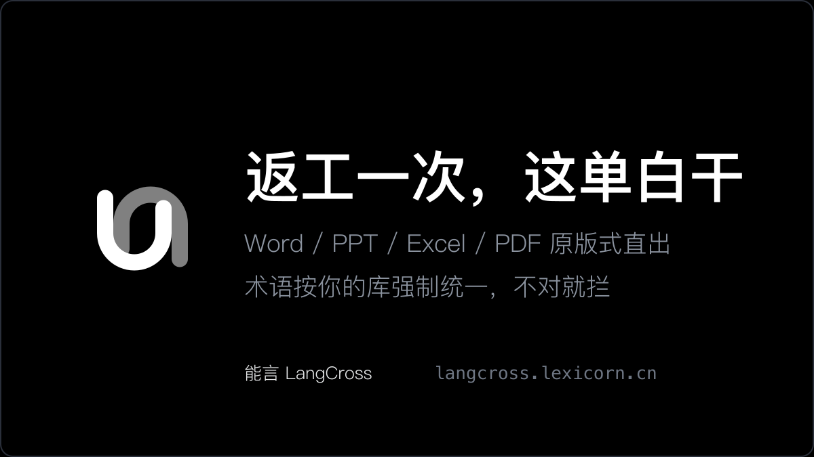
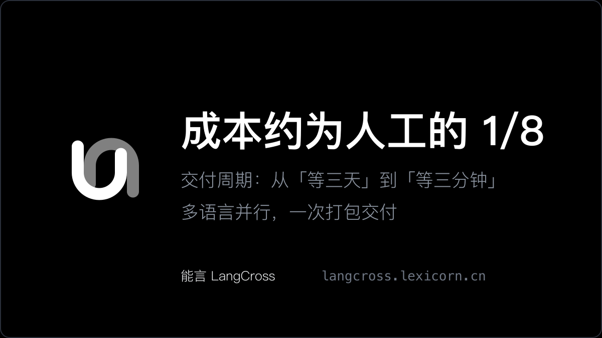

能言 LangCross · X 首推物料包（痛点版）
文案口径：不谈产品、只谈损失 —— 先戳返工与等待的痛，再给 1/8 的账 · 生成于 2026-10-13
一、Logo 资产（全部可用）

logo-1024.png
1024×1024 · 白底
logo-dark-1024.png
1024×1024 · 黑底
logo-transparent-1024.png
1024×1024 · 透明底
logo-avatar-400.png
400×400 · X 头像
logo-avatar-dark-400.png
400×400 · 黑底
logo-64.png
64×64 · favicon
原始矢量：logo.svg（即 frontend-react/public/logo.svg 副本，无限放大不失真）
二、首推配图 Banner（A 版主推 / B 版降本）

banner-x-1200x675.png A 版 · 返工痛点 1200×675
与「文案 ①」配套发

banner-x-alt-1200x675.png B 版 · 降本增效 1200×675
与「文案 ③」配套发
三、推文文案
① 返工痛点 （主推，配 A 版 banner）
② 三连击（适合做串文第二条，或置顶）
③ 老板视角算账（配 B 版 banner）
④ 英文版（面向出海客群）
四、为什么这么写
- · 第一句必须是对方的损失，不是我的产品 —— 「返工」「等三天」是跨境/出海团队天天在付的隐形成本，代入感最强
- · 给具体的痛，不给形容词：80 页 Word、对齐表格、重做页眉、两小时起步 —— 越具体越像真的发生过
- · 产品只出现一次，且是解药：原版式直出（省返工）＋ 术语硬闸（省出错）＋ 1/8（省钱）＋ 分钟级（省时间），四条全落在降本增效上
- · 不自嗨：删掉「做了大半年」「第一个产品上线」这类制造者视角的句子，X 上没人关心你努力了多久，只关心能不能少花钱少返工
- · 合规：署名「能言 LangCross」；不承诺 100% 准确；不自称公司；不暴露上游模型供应商与成本口径